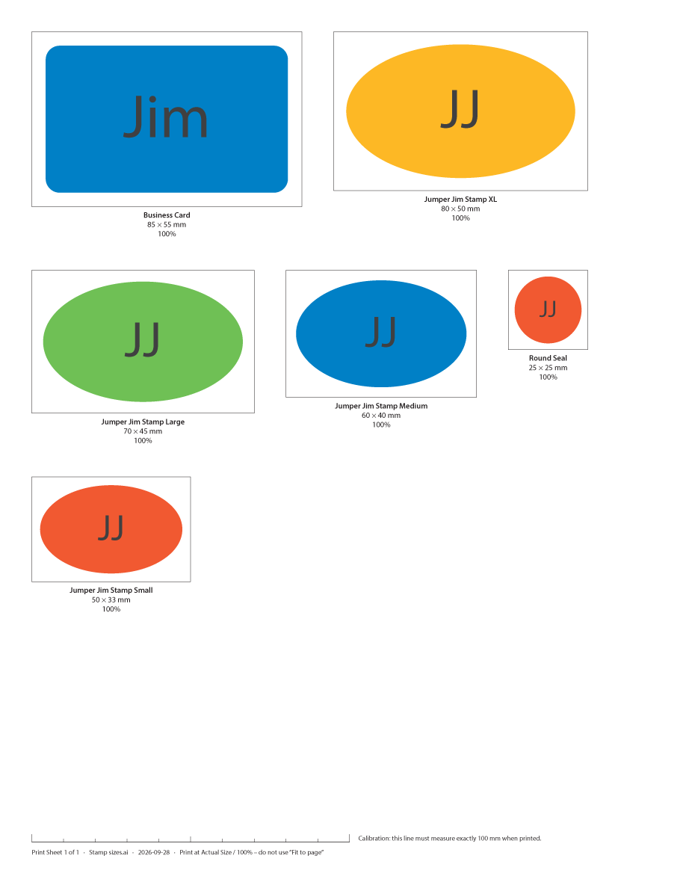
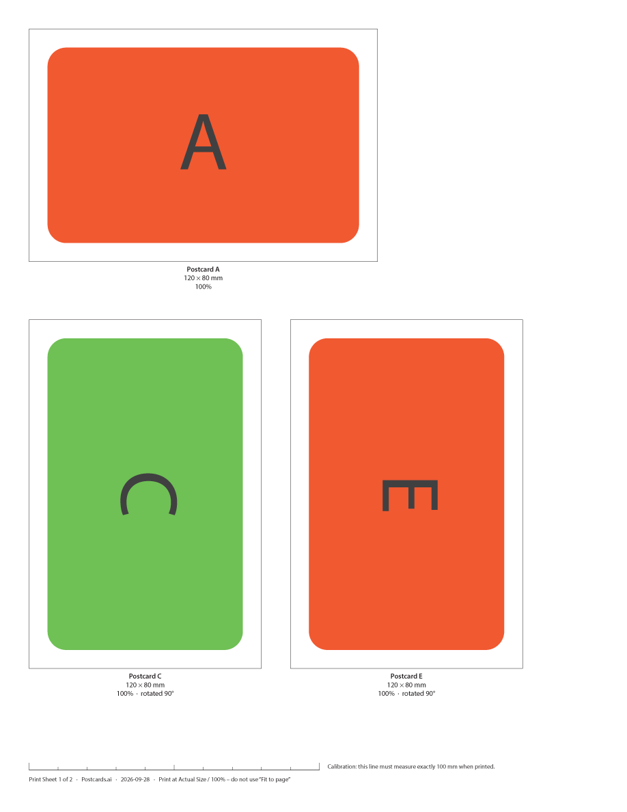

See how big your design really is.
Artboard Print Sheet is a free Adobe Illustrator extension. It places your artboards on a printable page at exactly 100% size, so you can compare stamps, stickers, labels and cards with a ruler instead of guessing on screen.
For Illustrator 2021–2026 · Windows & macOS · no account, no tracking.

Three clicks from screen to paper
A 50 × 33 mm stamp looks the same size as an 80 × 50 mm one on a monitor. On paper, the difference is obvious. Artboard Print Sheet does the manual setup for you.
1. Pick artboards
All of them, or tick just the ones you want to compare. Sizes are read straight from the artboards.
2. Create Print Sheet
Choose US Letter, A4, Legal, A3, Tabloid or a custom page. Samples are laid out automatically, with more pages added as needed.
3. Print at 100%
Print at actual size and hold the page against your product, desk or packaging. A ruler on every page confirms the printer didn't rescale.
Built for physical accuracy
Physical accuracy is the whole point, so the extension is strict about it.
Never shrunk to fit
Artboards are placed at their true size. If one is too big for the page, you're told. It is never quietly scaled.
Measured, not assumed
Every sample is re-measured after it's placed. If anything is off by more than 0.0035 mm, the sheet isn't created.
Your file stays untouched
The print sheet is a new document. Your original artwork and artboards are never modified.
Clear labels
Each sample gets a hairline border, its artboard name and its exact size in mm, cm, inches, pixels or points.
Calibration ruler
Every page carries a 100 mm (or 4 in) ruler. Measure it once to confirm the print really is actual size.
Labels in your document
Update Labels writes each artboard's name and size underneath it, on a locked layer that never prints or exports.
Best Fit saves paper
Choose Best Fit and the extension tries many layouts and keeps the one that uses the fewest sheets.
- Turns a sample 90° only when that saves a page, or when an artboard only fits sideways
- Every sample stays at 100%, and rotated ones are labelled “rotated 90°”
- Never uses more pages than the standard layout
- Gaps and margins are always respected
Example: six 120 × 80 mm postcards need 3 Letter pages in rows, and only 2 with Best Fit.

Install
Free for personal and commercial use. Download the latest release, which includes the panel, a no-install script and instructions.
Panel (recommended)
Install ArtboardPrintSheet-x.y.z.zxp with a ZXP installer, for example the free aescripts “ZXP Installer”. Then restart Illustrator and open Window › Extensions › Artboard Print Sheet.
Script (no install)
In Illustrator choose File › Scripts › Other Script… and pick Artboard Print Sheet.jsx. It offers the same options in a dialog.
Adobe Exchange
A listing on Adobe Exchange for one-click install from the Adobe Creative Cloud desktop app is on its way.
FAQ
How accurate is the printout?
On the sheet, every sample matches its artboard to within 0.01 pt (0.0035 mm). On paper, accuracy depends on your printer; typical office laser printers are within about half a millimeter over 100 mm. Measure the calibration ruler to check yours.
An artboard was left out – why?
It's larger than the printable area of the page. Choose a bigger page, landscape orientation, smaller margins, or Best Fit with rotation. The extension never shrinks a sample to make it fit.
Can I select several artboards?
Yes. Illustrator doesn't let extensions read a selection made in the Artboards panel, so choose Selected in the extension and tick the artboards there. The active artboard is ticked for you.
Will the labels end up in my exports?
No. Update Labels puts them outside the artboards on a locked, non-printing layer, which prints, artboard exports and PDFs ignore. Remove deletes the layer.
Does it collect any data?
No. It never connects to the internet, and your settings stay on your computer. See the privacy policy.
Which Illustrator versions are supported?
Illustrator 2021 (version 25) through Illustrator 2026 (version 30), on Windows and macOS. Support for new Illustrator versions is added in free updates.
Questions or problems? Email e8013585@gmail.com.